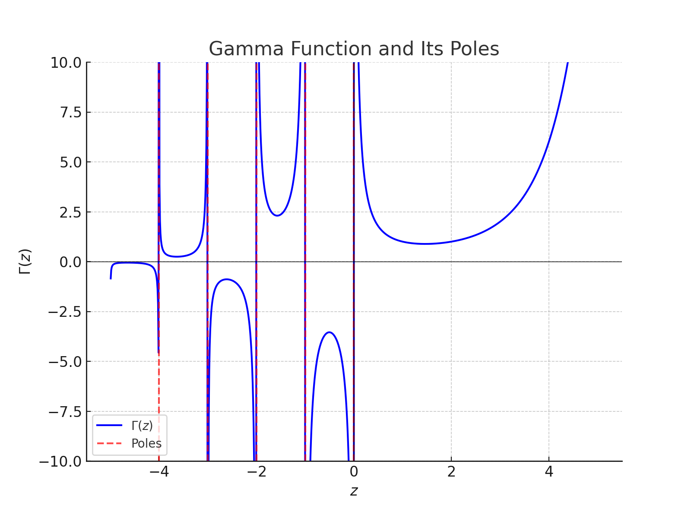

The Gamma function, denoted as Γ(z), extends the factorial function to complex and real numbers. It is defined for Re(z) > 0 as:
Γ(z) = ∫0∞ tz-1 e-t dt
For positive integers n:
Γ(n) = (n-1)!
The integral converges if and only if z > 0. For z ≤ 0, it diverges.
Using the recurrence relation, the Gamma function extends to negative non-integer values:
Γ(z) = Γ(z+1) / z
However, it has poles at non-positive integers (z = 0, -1, -2, ...).
The Gamma function oscillates for negative non-integer values and diverges at poles, while smoothly extending factorials for positive numbers.
